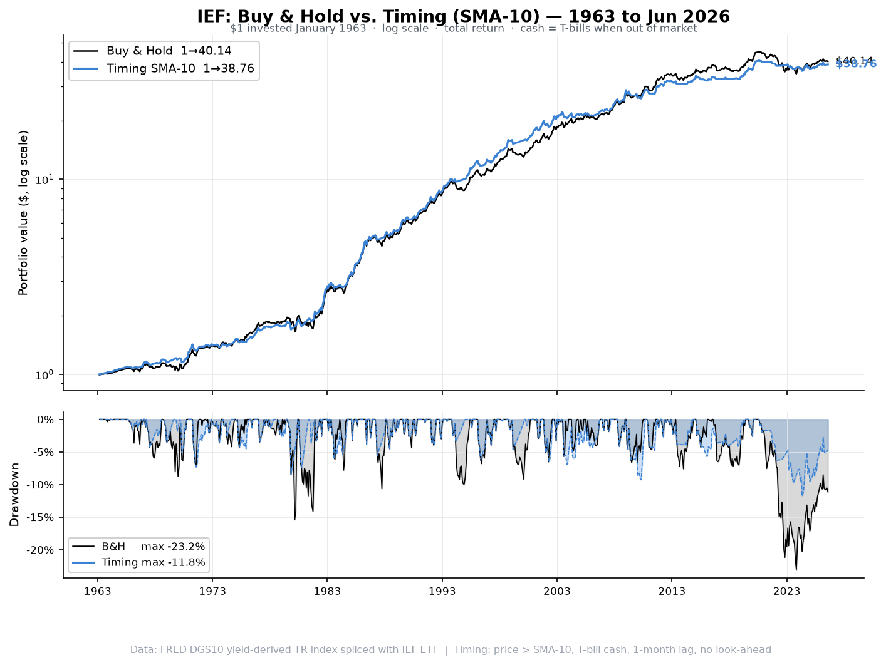
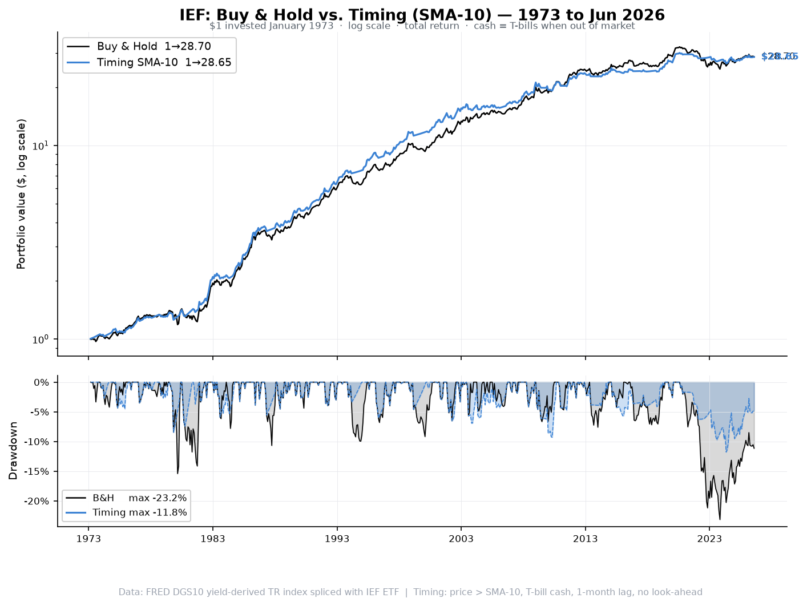
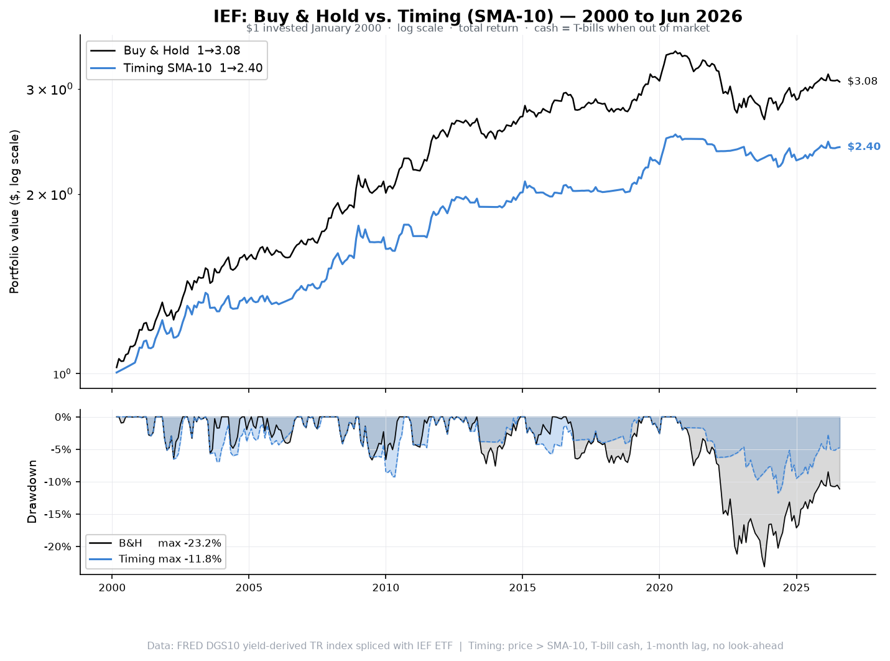

US 10-Year Treasury Bond — 63 years of monthly data, 1963–Jun 2026
ief_bh_timing_1963_2026.csv — 763 monthly rows (Jan 1963–Jun 2026) with columns:
price, sma10, signal, monthly_ret_bh, monthly_ret_timing, equity_bh, equity_timing,
drawdown_bh_pct, drawdown_timing_pct
| Strategy | CAGR | Volatility | Sharpe | Max DD | Ulcer Index | $1 → |
|---|---|---|---|---|---|---|
| Buy & Hold | +6.01% | 7.48% | 0.244 | -23.15% | 5.30 | $40.47 |
| Timing SMA-10 | +5.91% | 6.20% | 0.267 | -11.78% | 3.23 | $38.15 |
| Strategy | CAGR | Volatility | Sharpe | Max DD | Ulcer Index | $1 → |
|---|---|---|---|---|---|---|
| Buy & Hold | +6.49% | 7.70% | 0.305 | -23.15% | 5.66 | $28.78 |
| Timing SMA-10 | +6.38% | 6.44% | 0.336 | -11.78% | 3.41 | $27.20 |
| Strategy | CAGR | Volatility | Sharpe | Max DD | Ulcer Index | $1 → |
|---|---|---|---|---|---|---|
| Buy & Hold | +4.34% | 6.70% | 0.394 | -23.15% | 7.01 | $3.07 |
| Timing SMA-10 | +3.45% | 5.60% | 0.307 | -11.78% | 4.22 | $2.45 |
$1 invested January 1963 · log scale (top) · drawdown (bottom) · B&H $40.47 | Timing $38.15

$1 invested January 1973 · log scale (top) · drawdown (bottom) · B&H $28.78 | Timing $27.20

$1 invested January 2000 · log scale (top) · drawdown (bottom) · B&H $3.07 | Timing $2.45

Timing rule: At each month-end compare price to 10-month SMA. Price > SMA → invested in IEF. Price ≤ SMA → exit to T-bills. Signal at close of t−1, applied to return of month t (1-month lag).
SMA warm-up: Full-year 1962 prices used to seed the SMA. First signal = Jan 1963. No look-ahead bias.
Base date: For a period starting Jan YYYY, $1 is invested at Dec (YYYY−1) close.
pct_change() is called on the full price series; the return series is then trimmed to the window start,
so the first month's return is never lost.
Bond return model: Monthly return = coupon income (y/12) − D_mod(y) × Δy + ½ C(y) × Δy², where D_mod and C are the yield-dependent modified duration and convexity of a par bond. This replaces a flat-duration approximation and is especially accurate in the high-rate 1979–1982 period.
Cash: FRED TB3MS 3-month T-bill (1934–). Spliced with BIL ETF from 2007.
No costs, taxes or leverage.